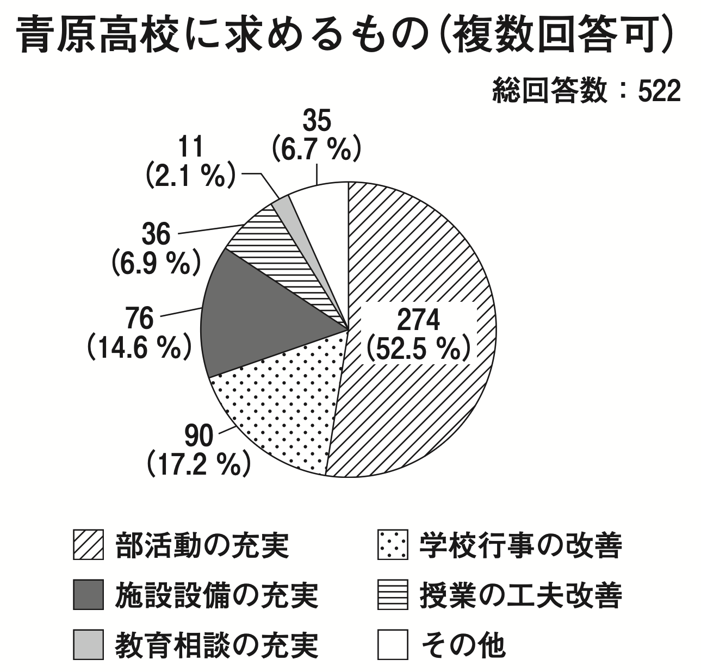

円グラフ
複数回答のグラフ
大学入試センターの平成29年度試行調査_問題、正解表、解答用紙等の国語の問題に、次のようなグラフがあります。

しかしこれは複数回答可のアンケートです。総回答数（総回答者数ではない）522のうち「部活動の充実」を挙げたのが274で、計算すると確かに52.5%になりますが、本文によると、この学校の生徒総数は477人です。回答者の何パーセントが「部活動の充実」を望んでいるのか、これだけではわかりません。仮に477人全員が答えたなら、274/477 = 57.4% です。
このようなアンケートでは、回答数に対する割合ではなく、回答者に対する割合を求め、円グラフではなく棒グラフで表すのがよいでしょう。グラフの例：アンケート（複数回答）も参考にしてください。
合計して100%にならない？
毎日ことば 100％にならない？ に、各項目のパーセンテージを四捨五入すると、合計が100%にならない場合のことが書かれています。記事では「四捨五入しているので、合計は必ずしも100％にならないことがある」と書くことを勧めています。
このことをツイートしたところ、いろいろなご意見をいただきました。東京都総務局統計部の まなぼう統計 / 統計を知ろう・学ぼう / データの特徴・変化をとらえよう - 割合を表す - 円グラフ では「合計が100%にならないときは、割合の一番大きい部分か「その他」で調整します」と書かれていることも教えていただきました。
各項目を四捨五入したら、その合計は必ずしも100%にならないことは自明なのですが、100%にならないと「間違っているのではないか」という問い合わせが来てわずらわしいので、調整して100%になるようにしてしまうことがあるようです。
でも、数値の改ざんは良くないことですので、四捨五入した値は改ざんせず、「各項目の割合は四捨五入しているので、合計は必ずしも100％にならないことがある」と注記するのが妥協点でしょうか。
[追記] 山口洋「四捨五入した％の合計が100％にならないとき」という論文を教えていただきました。この論文によると、安田三郎・原純輔『社会調査ハンドブック 第3版』（有斐閣、1982）のp.237に「研究者が手許におく資料としてはそれでよいが，公表するばあいには合計が100％となるよう，調整をしなければならない」とあるとのことです。